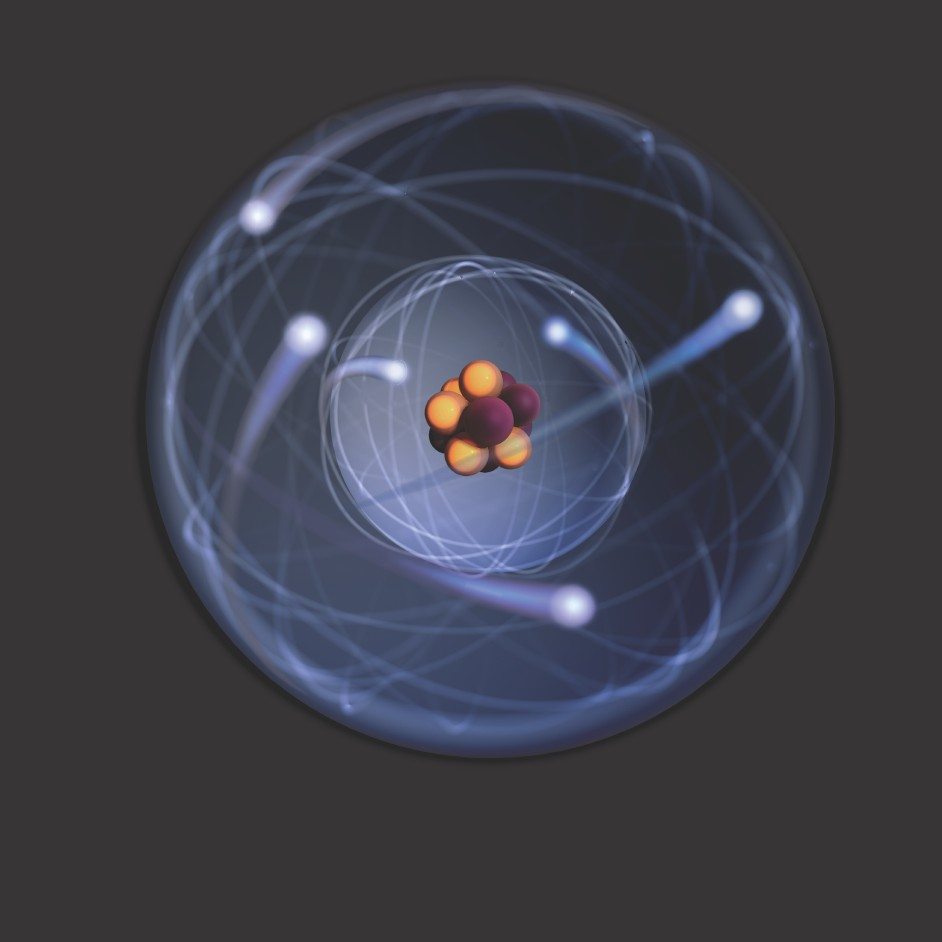

Every atom in your body came from a star that exploded . And, the atoms in your left hand probably came from a different star than your right hand. It really is the most poetic thing I know about physics: You are all stardust. You couldn’t be here if stars hadn’t exploded, because the elements - the carbon, nitrogen, oxygen, iron, all the things that matter for evolution and for life - weren’t created at the beginning of time. They were created in the nuclear furnaces of stars, and the only way for them to get into your body is if those stars were kind enough to explode. So, forget Jesus. The stars died so that you could be here today.